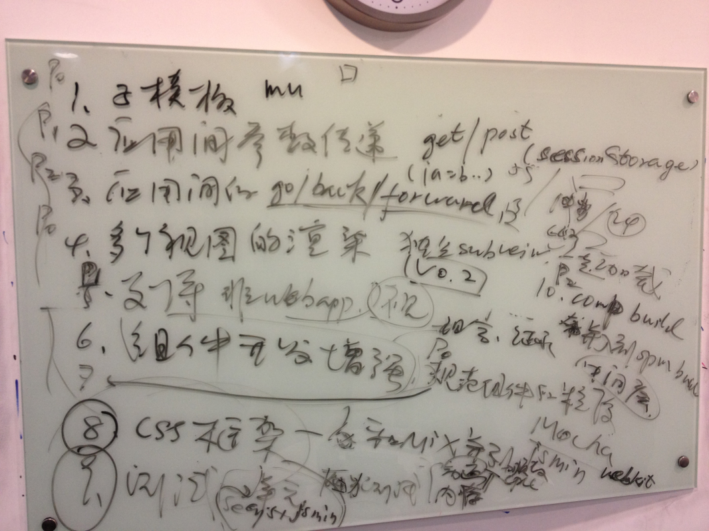

资源：3人
周期：11.26~12.17
在mu文件中，通过标签可以设置多个模板，通过id，可以获取对应的模板。当不存在标签时，整个mu文件被认为是一个模板。
一个APP（Controller）可以对应多个View，这些多个View互相独立，且可以通过被独立渲染。
分拆现有View和Component中的Data，成为独立的Model对象。并和Template绑定。
GET-通过在hash后面增加!a=b&c=d的方式。POST-记录sessionStorage中，并维护一个hash->object的键值对来管理post数据。提供非webapp的APP（Controller）管理器，来支持非webapp的开发。
优化go/forward/backward功能。
会遇到如下一些问题
不应该所有视觉元素都应该被制作成组件，需要规范组件的开发。
组件的build需要经过comp build和spm build两部，是否可以整合到spm中？ spm中是否能支持中间件的开发？
CSS框架应该是和MIX JS框架并行的一个项目，参考bootstrap的CSS框架，来完成拥有扩展性的base css框架。基于base可以创建各种风格的skin。
